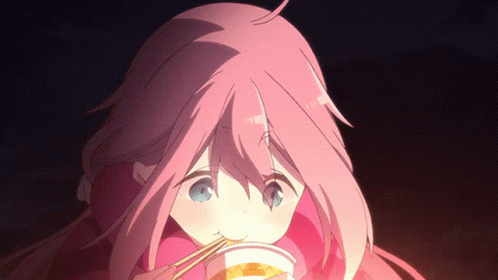

Yuru Camp△
Shima Rin

A solo camper who started camping under the influence of grandfather.
After Meeting Nadeshiko, He Experiences Camping With Someone For The
First Time.
"Nadeshiko ga chotto ki ni naru."
Nadeshiko Kagamihara

After meeting Rin by a lake, he takes an interest in camping and joins
Nokuru in high school. Always bright and positive, I love to have fun.
"Watashiniha utsukushī ane ga imasu"
Ena Saito

Rin friend. She's a free man with his own pace.
Although he is not a member of Nokuru, he is often interested in
Nokuru's activities. He also gives Rin, who is not good at socializing,
casual advice.
His pet dog's name is Chikuwa.
Aoi Inuyama

A calm person who speaks with a Kansai accent.
Among the reckless
members of Nokuru, An existence like a behind-the-scenes leader who
cares for everyone at critical moments.
She is called Inuko by Chiaki.
Chiako Ogaki

He has a lively and cheerful personality, but he also has a tearful and
human side.
Camping place, tool selection,A cheerful activist who brings
fun things first.
"I want to go camping!" and formed Nokuru with Aoi.